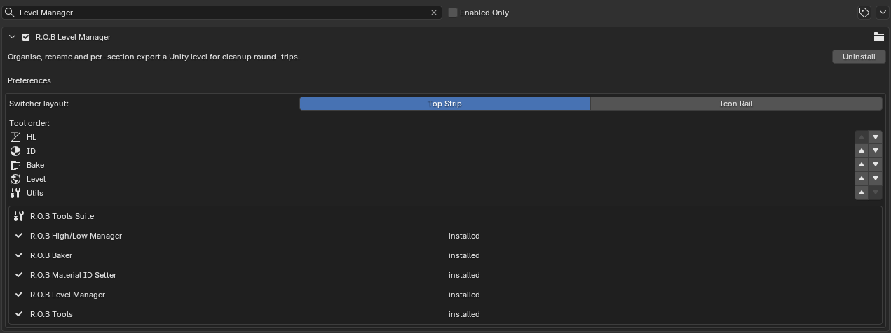

Preferences¶
Every R.O.B add-on has a page in Blender's preferences. Most of it can be left alone, but a few features do nothing until you fill something in there, and the bottom of every page tells you which parts of the suite you don't have.
Opening it¶
Edit > Preferences > Add-ons, type R.O.B in the search box, then click the arrow beside an add-on's name to open its page. Each of the five Blender add-ons has its own page. Change something and Blender saves it with your preferences (or press Save Preferences if auto-save is off).
Some settings are saved with the scene, not with Blender: they're shown on the preferences page because that's where you'd look for them, but they edit the open file. The page says so under each one.
What you're missing: the R.O.B Tools Suite box¶
The last box on every page lists the five Blender add-ons:

| Shows | Means |
|---|---|
| ✓ installed | Enabled in this Blender |
| ✗ not found | Not installed, or installed but switched off |
"Not found" on an add-on you own means it's switched off: find it in the same Add-ons list and tick it. On one you don't own, the suite zip has it, and the add-ons pick each other up as soon as they're installed:
- With High/Low Manager, the Baker's Group By starts on R.O.B HLM Assets in new scenes, so its bake groups come straight from your assets.
- With Material ID Setter, the Baker's Material ID bakes use your library's exact ID colours.
- All five share one sidebar tab, R.O.B Tools, with a switcher across the top. An add-on that isn't installed still has its button there, greyed out: that's the other place you'll notice one is missing.
Set these before you need them¶
| Add-on | Setting | Without it |
|---|---|---|
| R.O.B Tools | Test Blends Folder | Test Blends can't download anything |
| R.O.B Tools | Source .blend and Asset Name | Scale Character has nothing to add |
| High/Low Manager | Shader Library (.blend) | Import Shader has nothing to append |
| High/Low Manager | Default Library / Default Catalog | Send to Asset Library goes to your first library, Unassigned |
| Material ID Setter | Library File | The ID library lives in ~/.rob_material_ids/ on this machine only |
Shared by every add-on¶
These appear on all five pages and are the same setting, so changing them on one page changes them on all:
- Switcher layout: Top Strip puts the switcher in one row of buttons above the panel; Icon Rail puts it in a column of icons down the left.
- Tool order: the order of the switcher's buttons. Move each one with its up and down arrows.
High/Low Manager¶
- Export Subfolders: the folder names that exports go into, inside the
export folder, when Subfolder per export type is on in the Export panel:
High, Low, Painter and Marmoset. Untick one to put that
export straight into the export folder. Nesting works (
Bakes/High). The Painter and Marmoset folders are also where Apply Shader + Textures looks for baked maps. - Texture Set Profiles: the map suffixes each engine expects. A shader is generated from a profile, never shipped, with the node button on its row. Add Profile makes a new one and Restore Built-in Profiles puts back the engine profiles the add-on ships with.
- Shader Library (.blend): the
.blendyour own shader material lives in. Import Shader appends it into whatever file you're working in. Give the material a fake user (the shield icon) in that file, or Blender drops it on save and there's nothing to append. - Send to Asset Library: the Default Library and Default Catalog
used when the Final tab's Library and Catalog fields are left empty. The
catalog is also the folder inside the library, for example
Props/Furniture. - File collections into High/Low, Final, LOD and Shards folders (on): keeps each asset's collections in one outliner folder per tab. Only collections sitting loose at the top are moved; one you placed yourself stays put.
- Panel decides what is on screen (on): opening Final, LOD or Break shows that tab's meshes and hides the other two, since they all sit in the same place. Off, only the buttons change what's visible.
- High/Low buttons in the 3D View header: puts Both / High / Low in the viewport header so you don't need the sidebar open. Tool Header (the second row, the default), View Header (the top row), or Off. Only While Working on the Bake (on) hides them while you're on Final, LOD or Break, where they'd act on some other asset's bake setup.
- Project folders created beside the .blend: extra folders made alongside
the export folders, comma separated, with
/for nesting:Textures, Refs, Exports/Substance. - Bake-Asset Lock (on): shows the padlock on each Final row. Locked, the asset's high and low meshes can't be clicked in the viewport while you work on its Final copies. Exports and bakes unlock it by themselves.
- Popup menu shortcut: Ctrl+Shift+C opens the High/Low Manager as a popup at the mouse. Rebind it here.
R.O.B Baker¶
- Enable Experimental Features: nothing is behind it in this version; leaving it on changes nothing.
- Show Next Steps Guidance (on): the Next Steps box at the top of the panel, which reads your scene and offers the next thing to do. Turn it off once the workflow is second nature.
- Native Tracer (saved with the scene):
- Tracer: the tracer program to use. Leave it empty to use the one that ships with the add-on.
- Timeout (s): how long to wait for the tracer before giving up.
- Cycles GPU: renders the Cycles bake passes on the GPU set up in Preferences > System. The tracer's own device is Tracer Device, in the panel's Advanced tab; the two are unrelated.
- Restroke Delay (s): how long live painting waits after a stroke before re-baking, so a burst of quick strokes makes one bake.
- Max Hit Deviation: the ray distance for painted skew. Hits further than this from the averaged ray fall back to the averaged projection.
- Use Cycles as a Backup (shown when the tracer bakes normals): lets a map the tracer can't do fall back to Cycles so the bake always finishes. Off makes the tracer mandatory, and a bake that would need Cycles is refused before it starts.
- Bevel Samples: rays per texel for shader bevels, the same as the Samples on Blender's Bevel node. 0 bakes pure geometry.
- Bevel on GPU: traces the shader bevel on the graphics card too.
- Material Samples: samples per texel edge for the material maps; 4 means 16 per texel.
- AA Painted Skew: lets Geometry AA smooth skew-painted texels as well.
- Bundle Budget (GB): memory the tracer may use to answer several maps from one pass instead of one pass each.
- Bake Behaviour (saved with the scene): Preview After Bake shows the new Normal + AO on the lows when a bake finishes. Texture set naming: Whole Asset (one texture set per asset) or Per Part (one per part collection under the asset) decides how Create Bake Materials names materials.
- Show Bake Log (on) and Log Lines: the log box under the Bake buttons, and how many lines it shows. Off, the same lines still go to the console and the Info editor.
- Paint Display (saved with the scene): Shaded Paint Preview paints skew and offset over the baked Normal + AO instead of a black canvas; Paint Whole Asset joins all of an asset's lows into one paint mesh while painting; Done Shows Preview switches to the baked preview after a paint session (press Done again to restore materials); Skew and Offset tints and Tint Opacity set how painted areas look on screen. The saved maps are always white.
Material ID Setter¶
- Library File: where the ID library is stored. Point it at a shared
network path to use one library across machines. Empty uses
~/.rob_material_ids/material_ids.json. - Material Prefix (
MatID_): put in front of every material it makes. - Emission Strength (0): 0 keeps the materials shaded, so bevels show in Cycles. Raise it toward 1 for a flat, unlit readout.
- Custom Preview Samples (16): the viewport samples used when Preview Quality is set to Custom.
- Width Unit: shows bevel widths in Millimeters or Centimeters on the buttons, the pie and tooltips. Material names always use mm, because the Marmoset plugin reads the width from the name.
- Bevel width presets: the widths on the panel's buttons and in the pie.
- Shortcut: Ctrl+Shift+X opens the Material ID Setter as a popup at the mouse. It collides with ZenBBQ's geometry pie; untick one of the two in Preferences > Keymap if you have both.
Level Manager¶
Only the shared settings: switcher layout and tool order.
R.O.B Tools¶
- Scale Character: Source .blend is the file your scale character is
in, Asset Type says whether it's an Object or a Collection, and
Asset Name is its exact name in that file (
ScaleCharacter). Spawn at 3D Cursor (on) places it at the cursor rather than the world origin. - Test Blends Folder: where the test scenes are downloaded. There's no default on purpose: the add-on won't write tens of megabytes somewhere you didn't pick.
- Retop in 3D View Header (on): shows Retop Displace's strength, its Add button and the CFA toggle in the viewport header. Off keeps the header clear; the panel still has everything.
- Texture Optimizer and Overdraw have no settings.